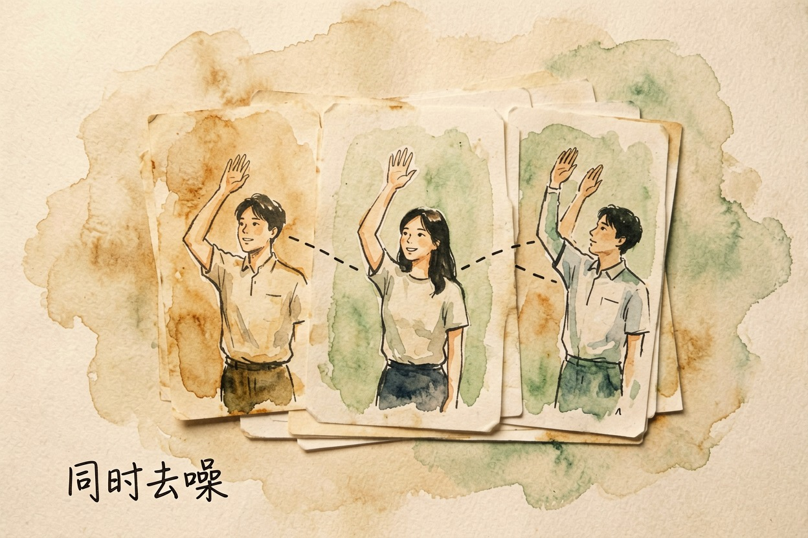
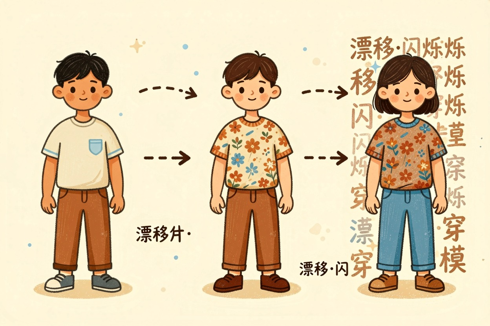
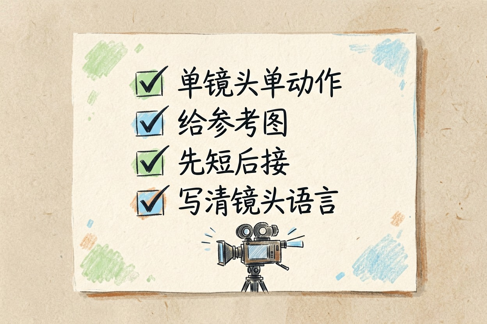
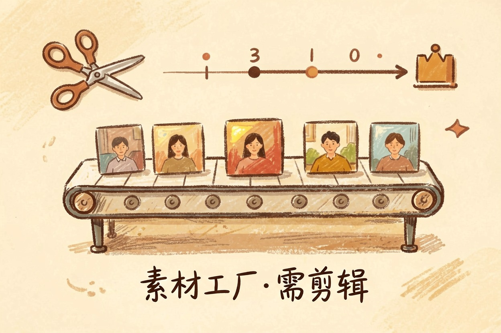

AI 生成视频的原理是什么？和画图差在哪 — Learntide
画面会动只是表象，难的是让第十秒的人还是第一秒那个人。视频模型多扛了一个维度。
AI 生成视频原理：多出来的那一维
AI 生成视频原理和画图共用同一套去噪思路，差别在于多管了一个维度：时间。画图只要一帧好看就行，视频还得让这一帧和前后几十帧对得上。
文生视频原理里最容易被误解的一点，就是把它想成「批量画图再拼起来」。真那么干，每帧的人脸、衣服、光线都会各画各的，连起来就是一段抽搐的幻灯片。
时间和画面是一起算出来的

主流做法是把一小段视频当成一个整体来处理。模型面对的不是单张画布，而是一叠按时间排好的画面，去噪时同时看空间和时间两个方向。
好处很直接：某一帧想让人物抬手，相邻几帧就得跟着给出合理的中间动作，否则整体对不上。动作连贯性因此被写进了生成过程里。
还有一层压缩。原始像素太贵，模型通常先把画面压到更小的表示空间里算，算完再解码放大。细小纹理和远处的字最先糊掉，多半就是这一步的损耗。
代价是算力吃得凶。同样的分辨率，一段几秒的视频，计算量比一张图高出一大截。所以各家默认时长都不长，想要长片，通常得分段接。
一致性为什么这么难守住

ai视频是怎么生成的，难点不在画得像，在于撑得住时间。
模型每次能同时照顾的帧数有限。超出这个范围，后面的画面只能参考前面的结果继续推，误差一点点累积。人物越走越变形、衣服花纹自己改样、背景招牌上的字换了一茬，都是这么来的。
另一个常见现象是画面闪烁。同一件物体在相邻帧里被还原得略有出入，连起来看就像在呼吸。
物理规律也是弱项。水流、布料、碰撞这些，模型学的是画面统计规律，不是力学。看着差不多，细看常常穿模。
视频提示词结构
主体动作：一位穿米色风衣的女性，缓步走过雨后街道
镜头：侧后方跟拍，缓慢右移，轻微手持感
环境：黄昏，路面积水反光，暖色路灯
时长与节奏：5 秒，全程一个镜头，无剪辑
负面词：人物变形，多余肢体，画面闪烁，字幕怎么把成功率提上去

第一，一次只让它做一件事。一个镜头、一个动作、一个环境。同时安排两个人做两件事，崩的概率立刻翻倍。
第二，能给参考图就给。首帧图、角色参考图、分镜草图，都比纯文字稳。视频生成模型原理决定了约束越具体，漂移空间越小。
第三，先出短段，再接。五秒稳住，比十秒糊掉有用。接的时候用上一段的末帧当下一段的首帧。
第四，把镜头语言写清楚。推、拉、摇、跟，说明白了，画面才不会乱晃。
别把它当成能一键出片的工具

现在的视频模型更像一个手感不稳的素材工厂。十条里挑一条能用，是常态，不是你不会写提示词。
真要做成片，把它放在流程中间：自己定分镜，让它出素材，再进剪辑软件调节奏、配音、加字幕。指望一句话直接产出完整作品，多半要失望。
另外别忽略合规。人像、品牌标识、他人作品风格，涉及这些的素材发布前都得掂量。理解 ai生成视频原理，也包括理解它现在还做不到什么。
本文信息核对于 2026-08-08。AI 产品的价格、免费额度与功能变动频繁，实际以各工具官网当前说明为准。